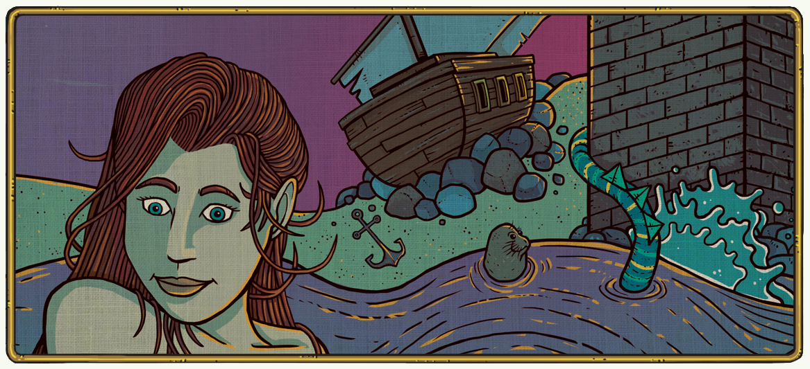

Like all game designers, we have one "close to launching" on Kickstarter, and three in the oven. If we are funded (knock on wood), we plan on offering the base game Feudum. If we hit our stretch goals, then we will offer as many as three expansions. Here’s a sneak peak at the games.

Blimey! You and your blokes have been banished and stripped of everything but a few shillings and table scraps. Undaunted, you journey to a strange land to reinvent yourself and reclaim your honor! Will you farm the earth, fight as knights or finagle your own feudums? Your fate is in your hands. (And for better or worse, the hands of a steely-eyed monarch named, Queen Anne).
Feudum (latin for fiefdom) is an economic medieval game of hand and resource management for 2-5 players. With many strategies at their disposal, players optimize four actions per turn in attempt to score the most "veneration points" over five epochs. For a more detailed look, visit Feudum on BoardGameGeek .
Bull spit and horse feathers! More strange folk have migrated to your neck of the woods, leaving you with little elbowroom. To make matters worse, windmills and catapults are popping up like dandelions. That takes the biscuit! You’re not about to lick someone’s boots without a fight.
Feudum: Windmills & Catapults is a riveting and rambunctious region tile expansion for 2-6 players! The game adds new region tiles, royal writs, a wooden windmill as well as action cards, pawns and influence markers for a 6th pewter-colored player!
Codswallop! A famine has emptied your barns and you must look to the sea for sustenance. With harpoon in hand, you hoist your anchors and begin your hunt for seal meat. But beware! Not all fins are friendly. The siren’s song is sure to shipwreck you!
Feudum: Seals & Sirens is a surreal and slippery seafaring expansion! The game adds whirlpool discs, royal writs, and a sultry siren known as, Elizabeth Jane of the Shore!

Heavens to Betsy! Or is it Betty? Just when you think you know the locals, their moods get all mishmashed and it’s hard to predict what they’re going to do next. Better watch your back!
Feudum: Alter Ego is a deck-building expansion with multiple personalities! The game lets you swap up to 6 of the character action cards for ones with alternative special abilities.